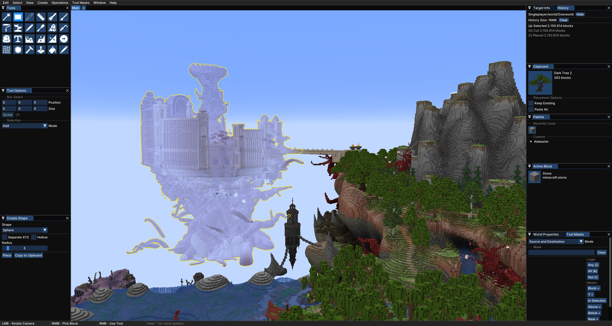
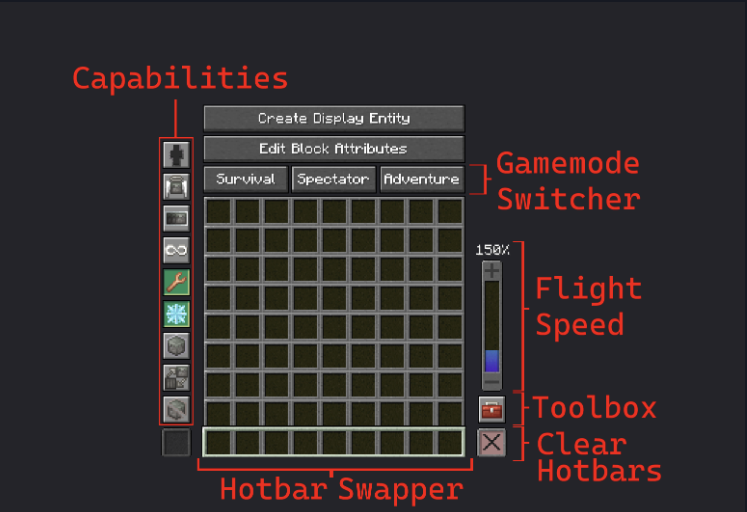
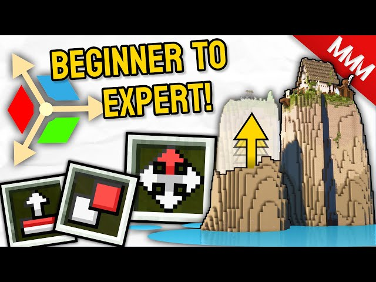

-Enhanced Flight
-Bulldozer
-Replace Mode
-Force Place
-No Updates
-Tinker
Axiom is an advanced building
mod designed to give players
an
interactive experience while
building. They do this through
the
use of an efficient user
interface allowing you to access
the
advanced building tools with
ease. Compare this with World Edit,
their main competitor, where there
is no UI so you have to use
commands to utilise the tools.

Axiom Editor UI
Upon pressing right-shift you will be met
with a blender-like UI consisting of tools
such as
box select, magic select, weld and
many more.
Editor mode documentation

Context menu
The contenxt menu pops up if you hold left-alt. It consists of 8
additional hotbar slots a gamemode switcher, capabilities, a flight speed controller,
a toolbox(with even more settings) and an option to create displayentities without
commands.
Learn more about the context menu

Builder tools
Axiom's Builder Tools, found in the tenth hotbar slot,
provide powerful utilities for efficient building.
These tools include Move, Clone, Erase, Stack,
Smear, Extrude, and symmetry. Each tool serves a unique
function,such as Move for mass block movement,
Clone for clonging structures, and stack for precise
area modifications. Unlike traditional building methods,
Axiom's Builder Tools streamline complex tasks, making
large-scale edits intuitive and efficient. With features
like real-time previews and adjustable parameters, Axiom
significantly enhances creativity and productivity in
Minecraft building projects.
Video explaining builder tools
Axiom download link https://modrinth.com/mod/axiom